|
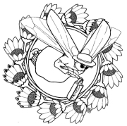
|
POHÁDKOVÉ PŘÍBĚHY
V první polovině 20. století se řada spisovatelů zaměřila na tvorbu pro děti. Také někteří slovutní autoři jako Nezval, Vančura nebo Karel Čapek zkusili oslovit nejmladší čtenáře. Objevili se i výrazní ilustrátoři dětských knih. Někteří z nich jako Josef Čapek, Lada nebo Sekora nejen doprovázeli pohádkové příběhy svými kresbami, ale také psali nové. Pro moderní pohádky je typická civilnost a hravost. Můžeme se v nich rovněž setkat s technickými vynálezy a dalšími civilizačními výdobytky.
|
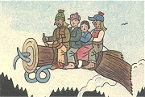
Ladova ilustrace k jeho knize Bubáci a hastrmani
|
Jan Karafiát (1846-1929)
Karafiátovým rodištěm byl Jimramov, zemřel v Praze. Vystudoval teologii a působil na Valašsku jako evangelický farář. Beletrii se věnoval pouze okrajově. Napsal knihy Broučci a Broučkova pozůstalost nebo autobiografii Paměti spisovatele Broučků.
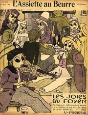
Vojtěch Preissig: Broučci
|
Jan Karafiát: Broučci
Pohádková kniha Broučci vypráví o životě svatojánských mušek, které „za nocí svítí lidem i broučkům na cestu“. Hlavní postavou je Brouček, který se chystá na první noční cestu se svým tatínkem a kmotříčkem. Jejich rodiny často navštěvuje osamělá Janinka. Brouček se nešťastně zamiluje do berušky Verunky, ale nakonec se ožení s dcerou své kmotřenky Beruškou. Narodí se jim spousta malých broučků, postupně ale umírají jejich rodiče i Janinka.
Broučci řeší běžné lidské problémy. Autor klade velký důraz na křesťanské hodnoty, jako je pokora vůči Božímu řádu, rodina nebo pomoc bližnímu. Brouček je vychováván ke zbožnosti, poslušnosti a přičinlivosti.
|
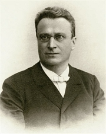
Které křesťanské hodnoty jsou vyzdviženy v této ukázce?
Jak končí celá kniha Broučci?
Jaký je rozdíl mezi evangelickým a katolickým farářem?
|
Ondřej Sekora (1899-1967)
Sekora se narodil v Brně a zemřel v Praze. Pracoval v Lidových novinách jako sportovní reportér. Za protektorátu musel toto zaměstnání opustit. Na konci války byl internován v pracovních táborech Kleinstein a Osterode. Je autorem pohádkových knih Ferda Mravenec, Ferda v cizích službách, Ferda v mraveništi, Trampoty brouka Pytlíka, Malířské kousky brouka Pytlíka, Čmelák Aninka, Kuře Napipi a jeho přátelé, Pošta v ZOO nebo Sedm pohádek. Všechny si Sekora sám ilustroval. Kreslil také obrázkové seriály (komiksy).
|
Ondřej Sekora: Ferda Mravenec
Ferda Mravenec je hlavní postavou tří Sekorových knih, které si autor sám ilustroval, a vystupuje i v několika kreslených seriálech. Šikovný Ferda zažije řadu dobrodružství. Při některých z nich mu sekunduje brouk Pytlík. Kvůli Berušce zkrotí Ferda lučního koníka a osedlá si i pana Hlemýždě. Nakonec se ale dostane před soud. Naštěstí se mu podaří s pomocí kobylky a pavoučka Poutníčka utéct pryč, kde na něj čekají další dobrodružství. Kromě napínavých i veselých historek se čtenář leccos dozvídá o životě hmyzu.
|
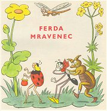
Sekora: Ferda Mravenec
Charakterizuj postavy Ferdy Mravence a brouka Pytlíka.
Najdi v ukázce pasáže poučné a zábavné.
Co si autor vymyslel a co ne?
|
Josef Čapek (1887-1945)
Josef Čapek se narodil v Hronově a zahynul v koncentračním táboře Bergen-Belsen. Byl významným avantgardním malířem. S bratrem Karlem napsal povídkové knihy Zářivé hlubiny a jiné prózy a Krakonošova zahrada a dramata Ze života hmyzu a Adam Stvořitel. Samostatně vydal knihy Lelio, Stín kapradiny nebo Kulhavý poutník. Je autorem esejů Nejskromnější umění a Umění přírodních národů. Posmrtně vyšel jeho deníkový soubor Psáno do mraků a sbírka Básně z koncentračního tábora. Pro děti napsal Povídání o pejskovi a kočičce, pohádku O tlustém pradědečkovi a loupežnících a knížku Povídejme si, děti.
|
Josef Čapek: Povídání o pejskovi a kočičce
V knize Povídání o pejskovi a kočičce se titulní postavy snaží vypořádat s běžnými lidskými starostmi. Musejí umýt podlahu, zašívají pejskovy roztržené kalhoty, slaví Vánoce, píšou dopis, pečou dort, starají se o panenku, která tence plakala, nebo hrají divadlo. Všechny problémy nakonec vyřeší po svém, ale jejich netradiční řešení nebývá vždycky nejlepší...
Kapitola Jak pejsek s kočičkou slavili 28. říjen byla po roce 1948 z knihy vyřazena z ideologických důvodů.
|
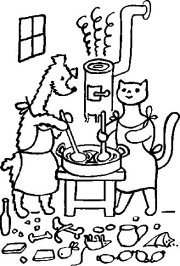
Ilustrace Josefa Čapka
Jak pejsek s kočičkou myli podlahu?
Čím zašili pejskovi kaťata?
Jak slavili 28. říjen?
Jak tento státní svátek slavíš ty?
|
Karel Čapek (1890-1938)
Karel Čapek se narodil v Malých Svatoňovicích a zemřel v Praze. Tento spisovatel patří k nejvýznamnějším a nejplodnějším českým autorům. Pro děti napsal knihy Devatero pohádek a Dášeňka čili život štěněte.
Co víš o Čapkovi?
Která další Čapkova díla znáš?
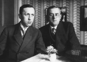
Karel Čapek a jeho bratr Josef Čapek
|
Karel Čapek: Devatero pohádek
V pohádkách Karla Čapka jsou typické pohádkové postavy nebo nadpřirozené bytosti konfrontovány s moderní realitou. Najdou si obyčejná zaměstnání a žijí životem běžných lidí. Strašidla se snaží být lidem k užitku. Nemocný Hejkal se stal politikem, rusalce doktor doporučil, aby se dala k filmu, poslední kouzelník odcestoval na Saharu a zkouší na poušti vyčarovat „pole a lesy a města a vsi“...
Pro knihu Devatero pohádek napsal Karel Čapek pohádku kočičí, psí, ptačí, vodnickou, loupežnickou, tuláckou, policejní, pošťáckou a doktorskou. „Ještě jednu navíc jako přívažek“ dodal jeho bratr Josef, je to pohádka O tlustém pradědečkovi a loupežnících.
|
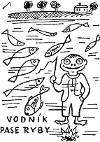
Najdi v ukázce jazykové hříčky.
Čím se Čapkova pohádka liší od klasických pohádkových příběhů?
Vymysli pro různé nadpřirozené bytosti nejpříhodnější povolání.
Kterou pohádkovou bytostí bys chtěl/a být? Proč?
Zkus napsat pohádku.
Vytvořte společnými silami novou pohádku. Každý ve skupině musí vymyslet jednu větu, když na něj přijde řada.
|
Josef Lada (1887-1957)
Lada pocházel z Hrusic u Prahy a zemřel v Praze. Svými kresbami doprovázel řadu knih. Přátelil se s Haškem a k jeho Švejkovi nakreslil skoro tisíc ilustrací. Sám vytvořil obrázkové knihy Svět zvířat, Veselý přírodopis nebo Veselé učebnice. Napsal pohádkové příběhy O chytré kmotře lišce, Bubáci a hastrmani, Mikeš nebo Nezbedné pohádky. Zajímavá je Ladova autobiografie Kronika mého života.
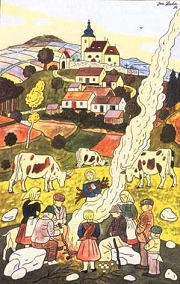
Ladovy kresby

|
Josef Lada: Mikeš
Hlavní postavou Ladovy dvoudílné knihy je mluvící kocour Mikeš a jeho přátelé – kluk Pepík, kozel Bobeš, prasátko Pašík. Mikeš se jednoho dne rozhodne opustit Hrusice a vydá se do světa. Doma zatím nastoupí na jeho místo kocourek Nácíček. Mikeš se dostane k cirkusu a zažije různá dobrodružství, ale nakonec se rád vrací domů.
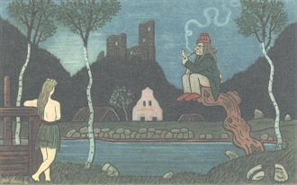
Ladova ilustrace
Další autoři literatury pro děti a jejich díla
Vítězslav Nezval: Anička skřítek a Slaměný Hubert, Věci, květiny, zvířátka a lidé
Vladislav Vančura: Kubula a Kuba Kubikula
Jindřich Plachta: Pučálkovic Amina
Josef Štefan Kubín: Lidové povídky z českého Podkrkonoší
Jan Zrzavý: Jeníkovy pohádky
František Halas: Ladění
|
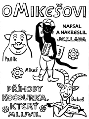
Co zažili Mikeš a Pašík na pouti?
Co bys marně hledal/a v klasické pohádce?
Líbí se ti Ladovy kresby?
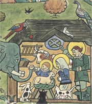
Lada: Zvířátka u jesliček
Napiš moderní pohádku. Které technické vymoženosti v ní použiješ?
Zjisti co nejvíce informací o dětské opeře Brundibár.
|
Internetové stránky
Čapek, Josef: Povídání o pejskovi a kočičce
Čapek, Karel: Devatero pohádek, Bajky a podpovídky
Čapek, Karel: Dášeňka
Lada
Lada
Lada: O chytré kmotře lišce
Karafiát
Karafiát: Broučci
Hrubín: Malý špalíček pohádek
Exkurze
Hrusice
Hrusice
Rulf: Ladovy Hrusice, článek
Tipy
Hmyz
|
Doporučená četba
Čapek, Josef: Povídání o pejskovi a kočičce, jak spolu hospodařili a ještě o všelijakých jiných věcech, Albatros, Praha 2003
Čapek, Karel: Dášeňka čili život štěněte, Knižní klub, Praha 2004
Čapek, K.: Devatero pohádek, Albatros, Praha 2003
Gebhartová, Vladimíra: Literatura pro děti (s ukázkami textů), SPN, Praha 1987
Karafiát, Jan: Broučci, SNDK, Praha 1968
Kubín, Josef Štefan: Kniha pohádek, Albatros, Praha 1991
Kubín, J.Š.: Strakatý náslo, Maťa, Praha 1997
Kubín, J.Š.: Zlatodol pohádek
Lada, Josef: Kronika mého života, ČSS, Praha 1986
Lada, J.: Mikeš, Albatros, Praha 1974
Lada, J.: Pohádkový svět, Eminent, Praha 1997
Ladovy pohádky, Albatros, Praha 1971
Ondřej Sekora, Práce všeho druhu, Práh, Praha 2003
Plachta, Jindřich: Pučálkovic Amina, NADAS, Praha 1992
Sekora, Ondřej: Brouk Pytlík, Albatros, Praha 1974
Sekora, O.: Čmelák Aninka, SNDK, Praha 1968
Sekora, O.: Ferdův slabikář, Albatros, Praha 2002
Sekora, O.: Knížka Ferdy Mravence, SNDK, Praha 1968
Všetička, František: Josef Štefan Kubín, Praha 1980
Zrzavý, Jan: Jeníkovy pohádky, Literární čajovna Suzanne Renaud, Havlíčkův Brod 1996
|
Vypracuj písemný referát o některé z uvedených knih.
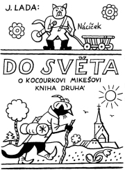
Druhá kniha Ladových příběhů o Mikešovi
|
|